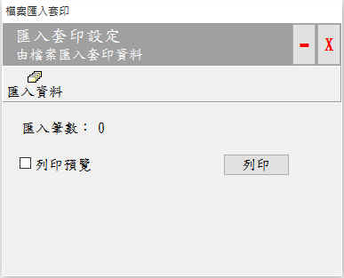

物品管理
簡介：
匯入套印是適用於整批、大量的套印方式，讓使用者匯入套印資料取代人工逐筆輸入，以節省人力及時間，並且降低錯誤，使用匯入套印時需注意下列事項：
- 使用前需先完成下列工作：
- 先完成測試套印：請先用輸入套印，確定本軟體可以與您的印表機設備，互相配合列印出表格。
- 請先完成「輸入設定 > 存檔設定」, 前述設定除了可儲存套印記錄之外，也會影響匯入檔案的欄位的先後順序。
- 匯入檔案筆數限制上限：
- 如果是單張表格，以一次放進印表機表格的最大數量(例如100張支票)，這樣才能簡化套印工作。
- 如果是連續式的表格，檔案的筆數不限。
- 列印預覽可在測試時使用，於正式套印時因為已完成測試(輸入套印)，所以直接列印即可以加快套印速度。
- 匯入資料：
- 由檔案匯入資料，匯入的筆數會顯示在匯入筆數。
- 檔案匯入格式及欄位數量、順序，請參考「../ImportFile」裏面的範例檔,或可參考「輸入設定 > 存檔設定」的設定內容，，如未設定「存檔設定」則參照「輸入設定」。
- 檔案類型：可用Excel(*.xlsx;*.xls)及文字檔(TAB 字元分隔) *.txt等2種格式檔案。

檔案匯入套印視窗